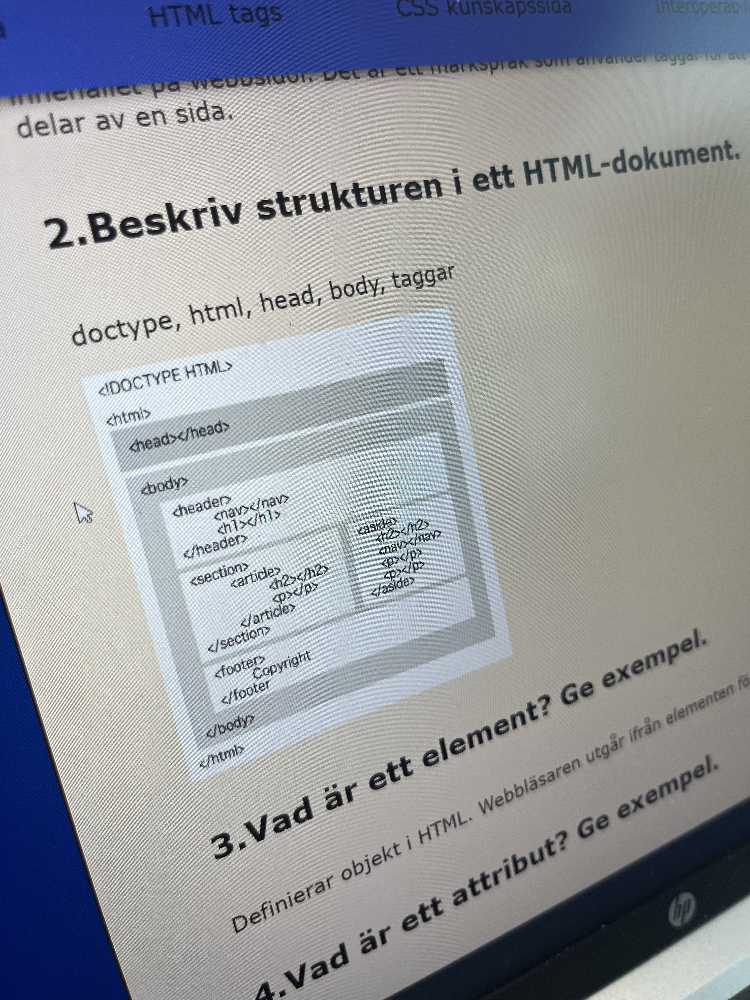

HTML Basics
1. Vad är HTML och vad används det för?
HyperText Markup Language, eller HTML är det vanligaste språket att skapa hemsidor med.
2. Beskriv strukturen i ett HTML-dokument.
HTML har Taggar(Tags). Taggarna omger innehållet av hemsidan. I ett HTML document måste det finnas vissa taggar, som t.exempel: !DOCTYPE - Det specificerar för datorn att det är ett HTML document. html - Det visar vart HTML texten börjar och slutar. head - Head innehåller meta-data, t.ex. Alla funktioner som inte är synligt på hemsidan. body - Body är det användaren ser på hemsidan. T.ex. bilder, knappar, etc.
3. Vad är ett element?
Element är taggar. Element definerar objekt i html struktur.
4. Vad är ett attribut?
Attribut specificierar ytterligare vad ett tag ska göra. Attribut ger mer information om ett tag.
5. Vilka är de viktigaste skillnaderna mellan HTML5 och HTML4?
HTML5 - standarden nu, annorlunda sätt att definera innehåll Väldigt tydliga taggar. HTML4 - har massor av div Man gav attribut till div ex. Id. Det blev stökigt, upprepande ord (div) Skillnader Tydlighet, t.ex. För stora grupper Inbäddat media Validera av formulär i webbläsare Canvas, 3d-grafik Lokal lagring utan cookies Asynkron laddning, hur webbsidan laddas
6. Vad är XML och XHTML?
XML Mer flexibelt än HTML Man kan definera egna element och datastruktur Används ofta för dataöverföring XHTML Mer strikt än HTML Super nogrann med sin syntax för att tolkas Mer konsekvent i hantering av element, kan leda till mer lättförståelig och bättre struktur
7. Vad är DOM, och varför är den viktig?
DOM Document Object Model Dom är representation över hemsidans struktur Genereras av innehåll, attribut element etc, Skapar en hierarki, ett träd, visar hur objekten håller ihop genom en modell T.ex. först kommer Document, sen html under html finns det head och body Med DOM kan användaren t.ex. Ändra textinnehåll, attribut, stil av element Ta bort/lägga till element Hantera olika händelser Interaktiva applikationer/gränssnitt